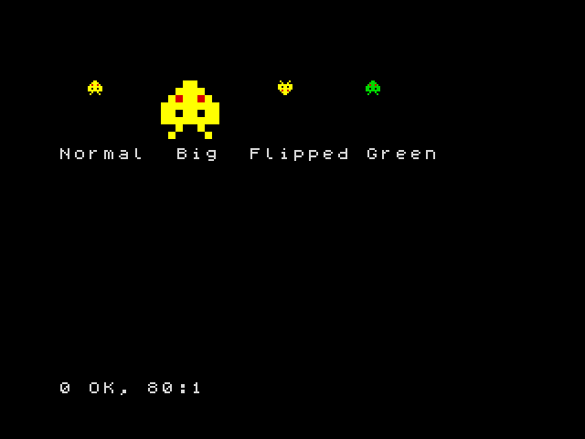
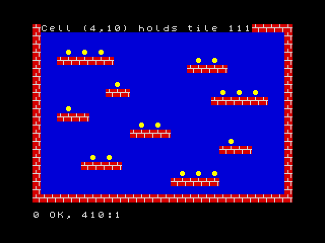

12. Sprites and tile maps
In this chapter you will learn to create sprites (small pictures
that move over the background) with GRAB and draw them with SPRITE, to
animate without flicker using the two screen pages, to detect collisions
with HIT, and to build levels with tiles and maps: TILE,
MAP DIM, MAP POKE, MAP and CELL.
These commands are ZX-V's graphics for games. They are fast: a BASIC loop can draw a few hundred small sprites in each frame.
Like BOX in chapter 9, they count coordinates in pixels from the top
left corner, with y growing downwards, and they use the colour numbers
0 to 15.
Making a sprite from a string
The easiest way to create a sprite is to draw it with characters. Each
character is one pixel: a digit from 0 to 9 or a letter from a to f
is a colour (a is 10, b 11... f 15), and any other character, like
., is transparent: the background shows through.
10 BORDER 0: PAPER 0: INK 7: CLS
20 LET s$="...ee..."+"..eeee.."+".e2ee2e."+"eeeeeeee"+"ee.ee.ee"+"eeeeeeee"+"..e..e.."+".e....e."
30 GRAB 0,8,s$
40 SPRITE 0,16,20
50 SPRITE 0,56,20,0,"",32,32
60 SPRITE 0,120,20,2
70 SPRITE 0,168,20,0,"0123456789abcd4f"
80 PRINT AT 7,0;"Normal Big Flipped Green"

GRAB 0,8,s$creates sprite number 0, 8 pixels wide, from the string. The string has 64 characters: 8 rows of 8, one after the other. Hereeis bright yellow (14) and2is red.SPRITE n,x,ydraws spritenwith its top left corner at (x,y).- A fourth number flips it: 1 left to right, 2 upside down, 3 both.
- A string in fifth place changes its colours: the colour
iis drawn as the character in positioniof the string (counting from 0). In line 70, the4in position 14 turns bright yellow into green. - Two more numbers stretch it to that width and height (line 50).
You can have up to 256 sprites, numbered 0 to 255.
Moving without flicker
To move a sprite you draw it again in its new place, after rubbing out the old picture. If you do it on the screen you are looking at, you will see the moment when it is rubbed out: the picture flickers. The trick is to draw on a hidden screen and show it when it is ready.
ZX-V has two screen pages, 0 and 1. SCREEN n chooses the page where
things are drawn; PAGE n chooses the page you see. So:
10 BORDER 0: PAPER 0: INK 7: CLS
20 LET s$="...ee..."+"..eeee.."+".e2ee2e."+"eeeeeeee"+"ee.ee.ee"+"eeeeeeee"+"..e..e.."+".e....e."
30 GRAB 0,8,s$
40 LET x=0: LET s=1
50 REPEAT
60 SCREEN s
70 BOX 1,0,0,256,192
80 SPRITE 0,x,88
90 PAGE s: LET s=1-s
100 WAIT 1
110 LET x=x+2
120 UNTIL x>248
130 SCREEN 0: PAGE 0
s is the hidden page. Each turn draws the whole picture there (a blue
background and the sprite), shows it with PAGE s, and swaps: LET s=1-s
turns 1 into 0 and 0 into 1, so the next picture is drawn on the other page.
WAIT 1 keeps the speed steady at 50 pictures a second. At the end, line
130 leaves everything on page 0, the normal one.
Sprites from a drawing, and collisions
GRAB can also copy a sprite from something drawn on the screen: GRAB
n,x,y,w,h,t takes the rectangle of w × h pixels at (x,y), and colour
t becomes transparent.
HIT(a,ax,ay,b,bx,by) gives 1 if sprite a drawn at (ax,ay) and sprite b
at (bx,by) touch each other: if any of their visible pixels overlap.
10 BORDER 0: PAPER 0: INK 7: CLS
20 GRAB 0,8,"...ee..."+"..eeee.."+".e2ee2e."+"eeeeeeee"+"ee.ee.ee"+"eeeeeeee"+"..e..e.."+".e....e."
30 DISC 3,8,8,7: GRAB 1,0,0,16,16,0
40 LET x=0: LET s=1
50 REPEAT
60 SCREEN s: BOX 0,0,0,256,192
70 SPRITE 1,200,84
80 SPRITE 0,x,88
90 PAGE s: LET s=1-s: WAIT 1
100 LET x=x+2
110 UNTIL HIT(0,x,88,1,200,84)
120 SCREEN 0: PAGE 0
130 BEEP 0.2,-10
140 PRINT AT 0,0;"Crash at x=";x
Line 30 draws a magenta disc in the corner and grabs it as sprite 1, with black (0) as transparent, so only the disc is kept. The loop moves sprite 0 until it touches the disc.
Tiles and maps
Platform and maze games are built from small square pictures repeated many times: bricks, grass, coins. Each little picture is a tile, and a map says which tile goes in each square of the level.
TILE 8,n,x,ycopies the 8 × 8 pixels at (x,y) of the screen as tile numbern. (Tiles can also be 16 × 16:TILE 16,....)MAP DIM m,w,hcreates map numberm(0 to 15),wsquares wide andhhigh.MAP POKE m,x,y,a$fills squares of the map from (x,y) to the right, one per character: each character puts the tile whose number is its code. So if tile 35 is a brick,#(code 35) means a brick.MAP mdraws the map on the screen.CELL(m,x,y)tells you which tile is in square (x,y): this is how a game knows whether there is a wall or a coin.
10 BORDER 0: PAPER 0: INK 7: CLS
20 REM Tile 32 (a space): sky
30 BOX 1,0,0,8,8: TILE 8,32,0,0
40 REM Tile 35 (#): brick
50 BOX 2,0,0,8,8: BOX 7,0,3,8,1: BOX 7,3,0,1,3: BOX 7,6,4,1,4: TILE 8,35,0,0
60 REM Tile 111 (o): coin
70 BOX 1,0,0,8,8: DISC 14,3,3,2: TILE 8,111,0,0
80 MAP DIM 0,32,22
90 FOR y=0 TO 21: READ r$: MAP POKE 0,0,y,r$: NEXT y
100 MAP 0
110 PRINT AT 0,1;"Cell (4,10) holds tile ";CELL(0,4,10)
200 DATA "################################"
210 DATA "# #"
220 DATA "# #"
230 DATA "# o o o #"
240 DATA "# ####### o o #"
250 DATA "# ##### #"
260 DATA "# #"
270 DATA "# o #"
280 DATA "# ### o o o #"
290 DATA "# ####### #"
300 DATA "# o #"
310 DATA "# #### #"
320 DATA "# o o #"
330 DATA "# ##### #"
340 DATA "# o #"
350 DATA "# #### #"
360 DATA "# o o #"
370 DATA "# ##### #"
380 DATA "# o o o #"
390 DATA "# ###### #"
400 DATA "# #"
410 DATA "################################"

The level is drawn in the DATA lines, almost as you see it. Square (4,10)
has an o, so CELL gives 111, the coin. To pick up a coin, a game puts a
space in its square with MAP POKE 0,x,y," " and draws the map again.
Scrolling
A map can be bigger than the screen. MAP m,mx,my,x,y,w,h draws the part of
the map that starts at pixel (mx,my) of the map, in the rectangle (x,y,w,h)
of the screen. Change mx little by little and the level scrolls:
10 BORDER 0: PAPER 0: INK 7: CLS
20 BOX 1,0,0,8,8: TILE 8,32,0,0
30 BOX 2,0,0,8,8: BOX 7,0,3,8,1: BOX 7,3,0,1,3: BOX 7,6,4,1,4: TILE 8,35,0,0
40 CLS
50 MAP DIM 0,64,2,8,1
60 MAP POKE 0,0,0," ## ### ##### ## ### #### "
70 MAP POKE 0,0,1,"################################################################"
80 LET cx=0: LET s=1
90 REPEAT
100 SCREEN s: MAP 0,cx,0,0,100,256,16
110 PAGE s: LET s=1-s: WAIT 1
120 LET cx=cx+2: IF cx=512 THEN LET cx=0
130 UNTIL INKEY$<>""
140 SCREEN 0: PAGE 0
In MAP DIM 0,64,2,8,1, the 8 is the size of the tiles and the final 1 makes
the map repeat in both directions: after the last column comes the first
one again, so the scroll never ends. Press a key to stop it.
Line 120 takes cx back to 0 when it reaches 512, the width of the map
(64 tiles of 8 pixels): since the map repeats, nothing changes on the
screen, and the number never grows too big.
Keeping your graphics
Sprites, tiles and maps stay in memory after the program ends, and also
after RUN; NEW deletes them. To save them all in a file on the SD card,
use SAVE "name" GRAPHICS, and LOAD "name" GRAPHICS brings them back.
Drawing big sprites with strings is slow work. It is easier to draw them on
your PC with zxv-gfx,
the graphics editor that comes with the emulator, which saves .gfx files
directly. You can also use any paint program and convert the pictures with
the png2gfx tool: the SDK guide explains how.
Try it
- Make a sprite of your own, 8 × 8, and move it diagonally across the screen.
- In the tile map program, add a sprite that you move with the keys (as in
chapter 11), and print the number of the tile under it with
CELL.
Hint
For the second, the square under the point (x,y) of the screen is
(INT (x/8),INT (y/8)), because the tiles are 8 pixels wide. Remember to
draw the map again (MAP 0) each time before the sprite, so that the old
sprite disappears, and use the two pages to avoid flicker.
Reference: Sprites, tile maps and fast graphics,
GRAB, SPRITE,
HIT, TILE,
MAP DIM, MAP POKE,
MAP, CELL,
PAGE, SCREEN.
Next: 13. Files and the SD card · Previous: 11. Keyboard and joystick